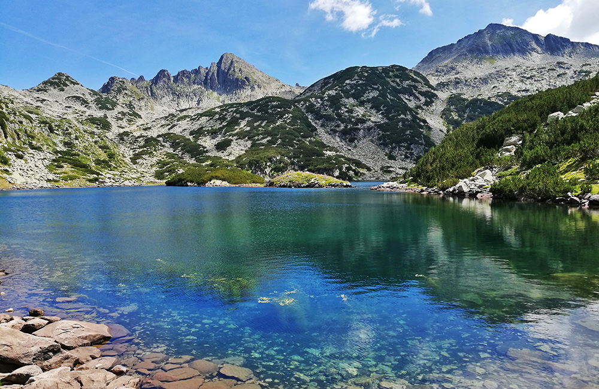

На 2-ро място ще ви представим планина Пирин
Пирин планина – млад алпиец на 10 милиона години
Пирин планина се намира в югозападната част на България и е в общ масив с Рила и Родопите. За разлика от Стара планина например, която се простира от запад на изток през цяла България, Пирин е малка, компактна.
В права линия северозапад – югоизток, Пирин планина е с дължина само от 66 км. Максимално достига ширина от 40 километра от Сандански до Обидим. На своите 2585 квадратни километра обаче, планината има 96 върха, чиято надморска височина е между 2500 и над 2900 м.
Най-висок е Вихрен – 2914 метра. Той е втори по височина у нас – „изостава“ с 11,4 метра от рилския връх Мусала. Връх Вихрен е доста напред и в международните „класации“ по височина – той е трети на Балканите, седми в Европа. Другият връх в Пирин планина, който е над 2900 метра, е Кутело.
Тя заема 2585 квадратни километра територия, която обаче е със силно нагънат релеф – с многобройни стръмни върхове, отвесни пропасти, дълбоки долини.
Обратно към главната страница